JMessenger - Como Utilizar
- Introdução
- Browsers Suportados
- Opções - Troca de Status
- Mensagens de Status
- Lista de Contatos
- Indicador de Status
- Adicionando um novo contato
- Preferências Avançadas
- Troca de Mensagens
- Assinatura de Applet - Java
1. Introdução
O JMessenger é uma aplicação que permite o envio e recebimento de mensagens instantaneamente. Através da sua lista de contatos, você pode trocar mensagens e arquivos com seus contatos. Através da lista também é possível saber se seus contatos estão Online ou Offline. Para a troca de mensagens basta clicar em cima do nome do seu contato, se o mesmo estiver online ( verifique a sessão Indicador de Status ) abrirá uma janela onde você poderá enviar/receber as mensagens. O JMessenger está associado
a um serviço de mensagens instantâneas Jabber e este serviço é responsável pelo armazenamento dos seus contatos, preferências e mensagens.
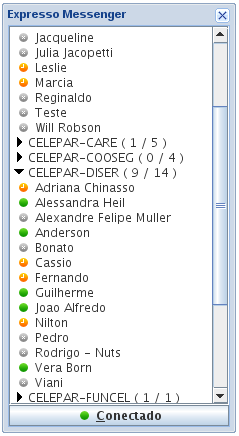
( Figura 1 )
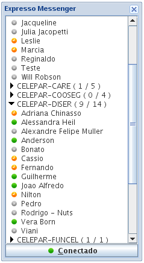
( Figura 1 )
Windows XP/2000/ME/98/95
Linux
Para a troca de status ( conforme figura 2 ), basta dar um clique com o mouse e em cima do botão .
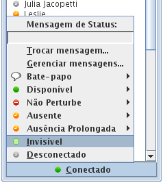
( figura 2 )
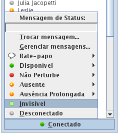
( figura 2 )
É possível configurar as mensagens para cada status escolhido (figura 3) clicando no item Personalizar.
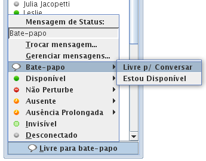
( figura 3 )
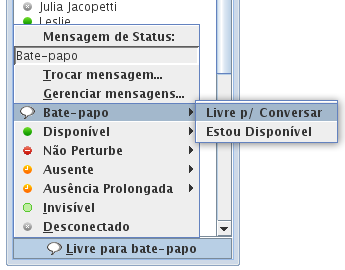
( figura 3 )
Na lista de contato (figura 4), você visualizará seus contatos.
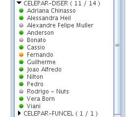
( figura 4 )
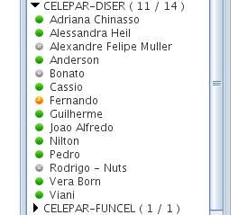
( figura 4 )
- Disponível
- Ausente
- Bate-papo
- Não Perturbe
 - Invisível
- Invisível- Offline / Desconectado
- Ausência Prolongada
7. Adicionando um novo contato
Para adicionar um novo contato, clique na imagem  , no canto superior esquerdo (figura 5) e abrirá uma janela para adição dos contatos (figura 6) e
faça uma pesquisa pelo nome. O resultado retornará somente os usuários que tem permissão para usar o Mensageiro Instantâneo do Expresso.
Clique sobre o link "Adicionar Contato" e aparecerá dois campos, sendo que o campo "Apelido" é preenchido no momento da escolha do novo contato e o campo grupo
terá que ser definido. Preenchendo estes dois campos basta clicar no "Botão Adicionar", e o contato será adicionado em sua Lista de Contatos.
, no canto superior esquerdo (figura 5) e abrirá uma janela para adição dos contatos (figura 6) e
faça uma pesquisa pelo nome. O resultado retornará somente os usuários que tem permissão para usar o Mensageiro Instantâneo do Expresso.
Clique sobre o link "Adicionar Contato" e aparecerá dois campos, sendo que o campo "Apelido" é preenchido no momento da escolha do novo contato e o campo grupo
terá que ser definido. Preenchendo estes dois campos basta clicar no "Botão Adicionar", e o contato será adicionado em sua Lista de Contatos.
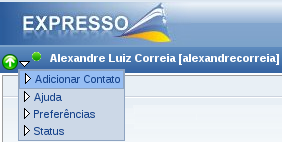
( figura 5 )
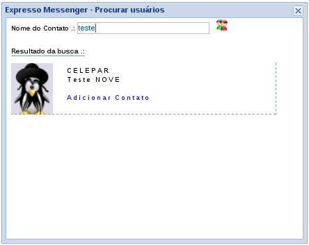
( figura 6 )
, no canto superior esquerdo (figura 5) e abrirá uma janela para adição dos contatos (figura 6) e
faça uma pesquisa pelo nome. O resultado retornará somente os usuários que tem permissão para usar o Mensageiro Instantâneo do Expresso.
Clique sobre o link "Adicionar Contato" e aparecerá dois campos, sendo que o campo "Apelido" é preenchido no momento da escolha do novo contato e o campo grupo
terá que ser definido. Preenchendo estes dois campos basta clicar no "Botão Adicionar", e o contato será adicionado em sua Lista de Contatos.
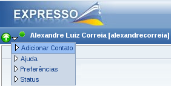
( figura 5 )
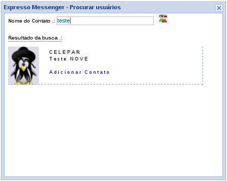
( figura 6 )
Clicando com o botão direito do mouse, você terá acesso a um menu (figura 7), com as seguintes funcionalidades:
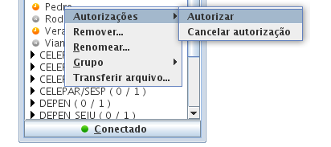
( figura 7 )
- Autorizações: Requisitar e autorizar permissões.
- Grupo: Trocar / Adicionar / Remover do grupo.
- Renomear : Renomeia o contato.
- Remover: Exclui o contato.
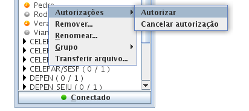
( figura 7 )
Clicando duas vezes com o botão esquerdo sobre o nome do contato escolhido, abrirá uma janela (figura 8), para a troca de mensagens. Nessa mesma janela existe um menu, o qual é possível
configurar o formato da fonte e enviar smiles.
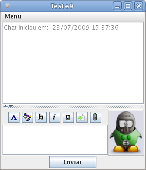
( figura 8 )
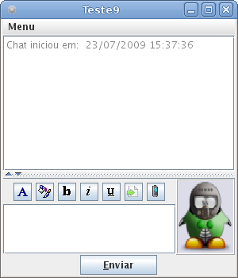
( figura 8 )
10. Assinatura de Applet - Java
O modelo de segurança implementado pela plataforma Java, está sobre o conceito que um código remoto (applet) não é confiável, garantindo assim que um applet malicioso não danifique
o computador. Porém existem applets que são de confiança e necessitam de permissões para fornecer determinado tipo de serviço. O Expresso Messenger é desenvolvido em
Java e precisa dessas permissões para fornecer o serviço de mensagens instantâneas. Quando carregado pela primeira vez, o Java que está instalado no computador, mostrará uma
janela ( figura 9), perguntando se deseja realmente rodar este código remoto e mostra dois botões, "Run" e o "Cancel". É necessário que seja marcada a opção "Run", e caso não queira
que esta janela abra, marque a opção "Always trust content from this publisher".
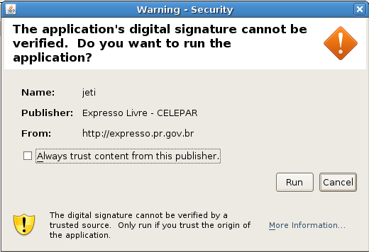
( figura 9 )
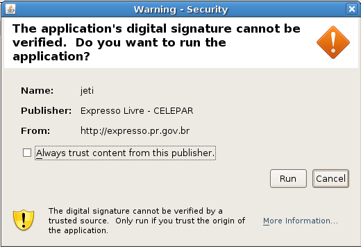
( figura 9 )